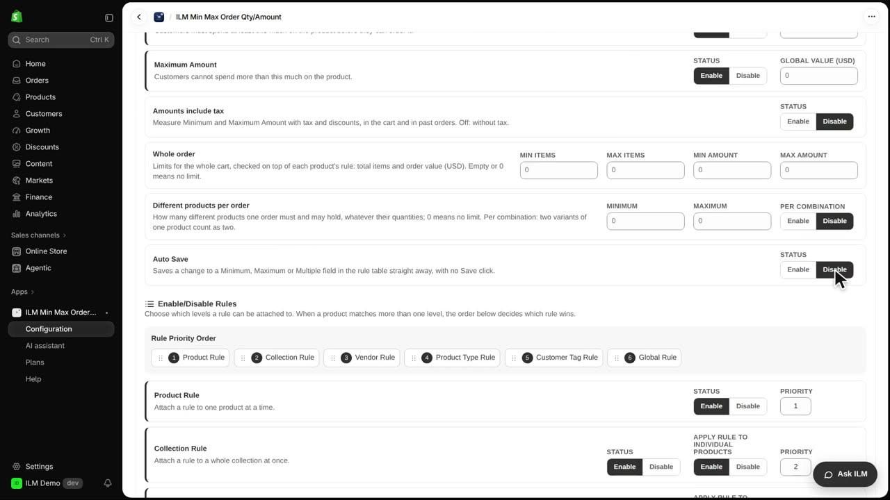
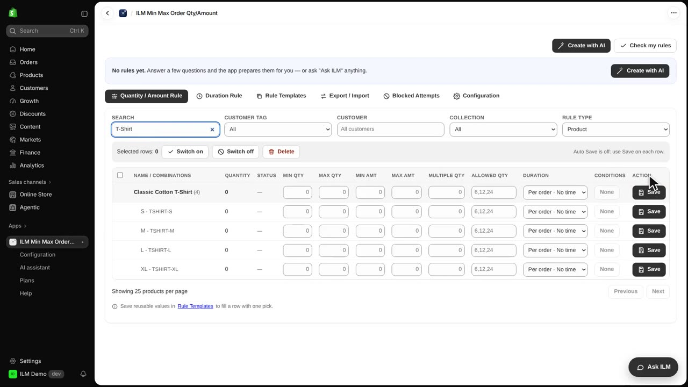
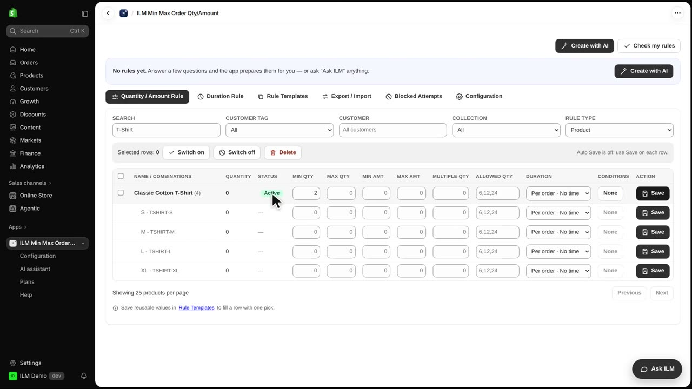
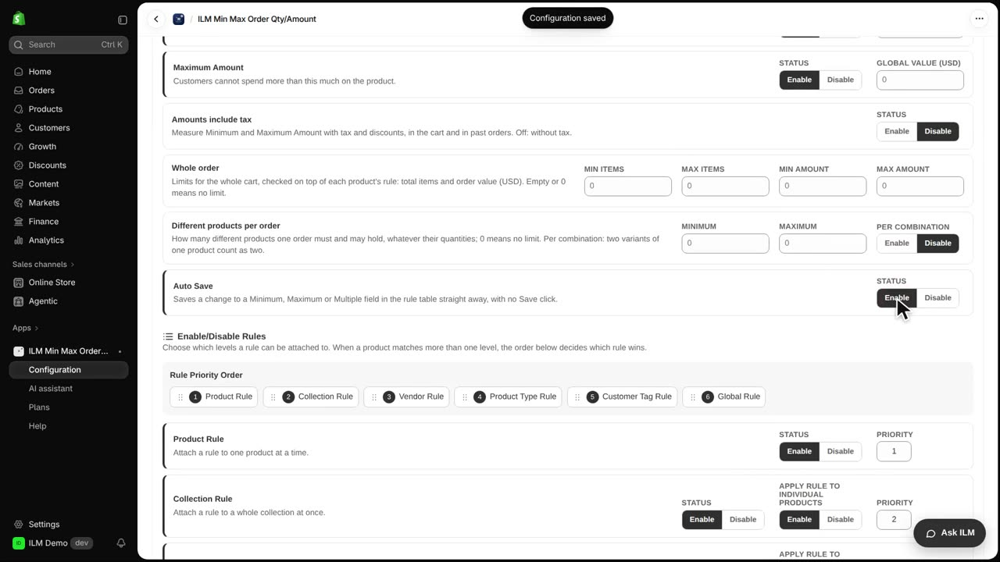

Auto Save decides when a change in the rule grid is saved. When you install the app it is on, so a value is saved as soon as you leave the field. Some merchants prefer to review their edits first and save each row with a click, and this setting gives you that choice. Today we will turn Auto Save off, edit the minimum quantity for the Classic Cotton T-Shirt, and save it manually.
We start in Configuration, on the General page. Find the Auto Save setting and click Disable. From now on, changes in the rule grid will wait for you instead of saving themselves.

Back in the Quantity / Amount Rule tab, we search for the T-shirt. Every row now has a Save button in the Action column, and the note at the top reminds you to save each row after editing.

Type two in the Min Qty field of the Classic Cotton T-Shirt row and leave the field. Nothing is saved yet, so the shopper still sees the old rule until you confirm the change.
Click Save in the T-shirt row. The rule is now saved and shows as Active, so shoppers must buy at least two Classic Cotton T-Shirts before checkout.

If you prefer saving without a click, turn Auto Save on again. Every field change will then be saved the moment you leave it.
